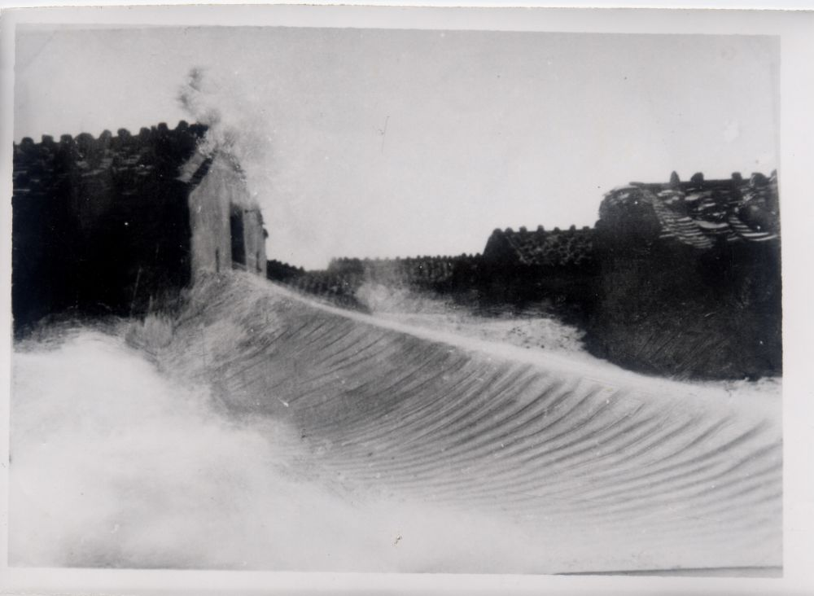
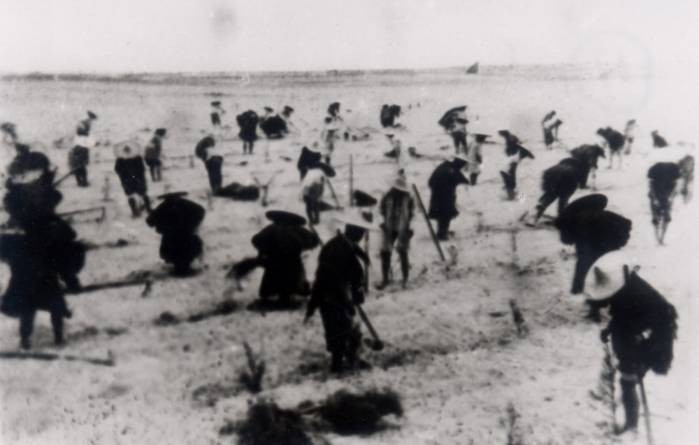
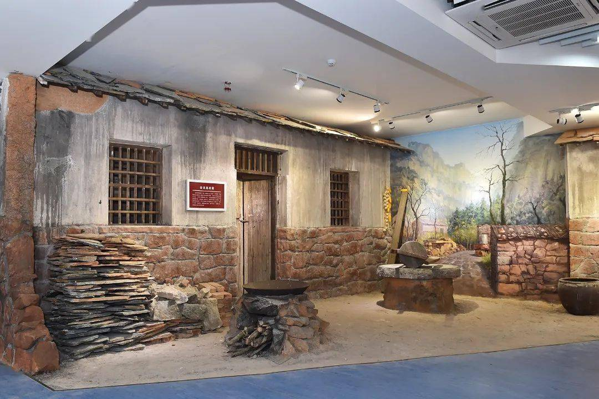
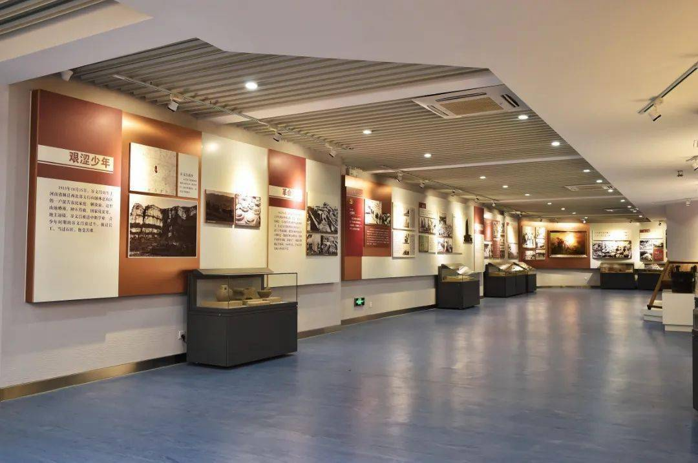
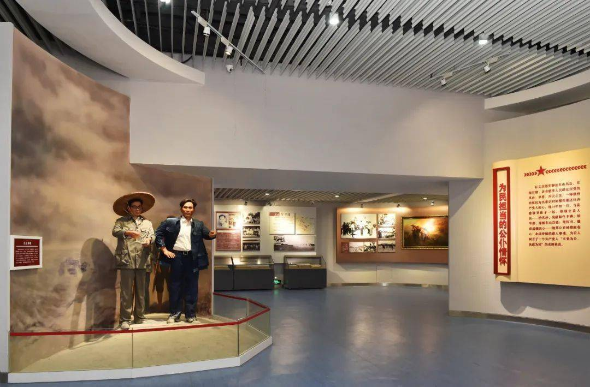

历史档案
文物名称
文物详细描述...
人 民 的 好 书 记
不治服风沙，就让风沙把我埋掉
谷文昌（1915—1981），河南林州人，1943年加入中国共产党。1950年随军南下福建东山，历任东山县县长、县委书记，在东山岛奋斗十四年，将荒漠孤岛变成绿洲绿岛。
10月15日生于河南省林县（今林州市）郭家庄的一户贫农家庭，自幼放牛砍柴，饱尝旧社会苦难。
参加抗日民兵，同年加入中国共产党。历任村农会主席、区委书记，在枪林弹雨中淬炼革命信念。
随长江支队南下福建，5月12日东山岛解放。谷文昌留任东山，开启了他与这座海岛十四年的不解之缘。
出任东山县委书记，面对风沙肆虐、民生凋敝的困境，立下"不治服风沙，就让风沙把我埋掉"的铮铮誓言。
历经多次试种失败，终于找到适合东山海岛的木麻黄树种。带领全县人民掀起植树造林热潮，筑起"绿色长城"。
调任福建省林业厅副厅长。离开东山时，全岛已造林8.2万亩，昔日的荒沙岛变成了绿洲。百姓夹道相送，泪洒长街。
1月30日在福州病逝。遵其遗愿，骨灰安葬于东山赤山林场——他亲手栽下的木麻黄林中。东山百姓形成"先祭谷公，后祭祖宗"的习俗。
习近平总书记在中央党校县委书记研修班上，高度赞扬谷文昌为"心中有党、心中有民、心中有责、心中有戒"的"四有"干部楷模。
谷文昌在东山十四年，以"功成不必在我"的胸怀和"功成必定有我"的担当，为东山人民留下了取之不尽的宝贵财富。
历时十四年，带领东山军民植树造林8.2万亩，营造30多公里长的"绿色长城"，彻底根治千年风沙之患，让荒岛变绿洲。
造林8.2万亩解放初，东山有4700余户"敌伪家属"遭受歧视。谷文昌力排众议，将她们改为"兵灾家属"，给予政治上的平等对待，赢得了全岛民心。
惠及4700余户带领群众修筑水库、开挖渠道，建成红旗水库等水利工程，解决东山岛世代缺水之苦，使农田旱涝保收，百姓饮水无忧。
修建水库13座身居县委书记高位，却从不谋私利。子女无一安排工作，家属长期是农村户口。"当领导的要先把自己的手洗净，把自己的腰杆挺直。"
两袖清风从风沙肆虐的荒岛，到郁郁葱葱的东海绿洲——这是谷文昌带领东山人民用十四年心血铸就的绿色奇迹。
拼版对比：东山岛东门屿鹰嘴岩附近风貌，按住滑块左右拖拽（资料照片）
习近平总书记将谷文昌精神凝练为"四有"——心中有党、心中有民、心中有责、心中有戒。这是共产党人的精神坐标，也是新时代的价值航标。
信念坚定，对党忠诚。无论身处顺境逆境，始终坚守共产党人的理想信念，听党话、跟党走，把党的事业放在心中最高位置。
一心为民，心系百姓。视人民为父母，把群众利益放在首位。"不把人民救出苦难，共产党来干什么"是他的赤诚心声。
敢于担当，迎难而上。面对风沙之患，他立下铮铮誓言；面对复杂历史遗留问题，他力排众议，以"功成不必在我"的胸怀干事创业。
廉洁奉公，严于律己。不谋私利，不搞特殊，清白做人，干净做事。"把自己的手洗净，把腰杆挺直"，是他对干部的基本要求。
以下照片均取自福建东山县谷文昌纪念馆实景，包括序厅塑像、旧居复原、勤政历程展厅等珍贵画面，让您身临其境地走进这座红色教育基地。

风沙肆虐时期的东山岛，沙埋村舍、满目疮痍。一年六级以上大风长达150多天。
纪念馆序厅中央矗立着谷文昌铜像，背景是鲜红的党旗，上方悬挂着象征和平的和平鸽。

上世纪东山岛百姓在沙滩上种植木麻黄的历史照片，再现了当年军民齐心治沙的壮阔场景。
谷文昌视察试种成活的木麻黄，这抹绿色承载着东山人战胜风沙的全部希望。

纪念馆内复原了谷文昌当年在东山居住的老宅场景，石墙、木门、石磨，再现了那个艰苦朴素的年代。
同一地点今昔对比，昔日的荒沙岛已变成郁郁葱葱的东海绿洲，见证"绿水青山就是金山银山"。

纪念馆展厅以图文并茂的形式，展示了谷文昌在东山十四年如一日的勤政为民历程。

展厅内生动再现了谷文昌深入群众、访贫问苦的感人场景，"不带私心搞革命，一心一意为人民"。
谷文昌的只言片语，朴实无华却掷地有声。这些话语穿越时空，至今仍在叩问每一位共产党人的初心。
不治服风沙，就让风沙把我埋掉。
—— 谷文昌 · 治沙誓言
不把人民救出苦难，共产党来干什么！
—— 谷文昌 · 为民初心
当领导的要先把自己的手洗净，把自己的腰杆挺直。
—— 谷文昌 · 廉洁自律
造福人民就是最大的政绩。
—— 谷文昌 · 政绩观
共产党人要干一行爱一行，干一行专一行，干一行成一行。
—— 谷文昌 · 干事创业
我们要对人民负责，对历史负责，对未来负责。
—— 谷文昌 · 责任担当
谷文昌虽然离开了我们，但他的精神永存。东山百姓"先祭谷公，后祭祖宗"的习俗延续至今，成为共产党人精神丰碑的生动注脚。
已累计致敬：献花 12,458 朵，敬礼 8,962 次
"谷文昌同志的事迹同焦裕禄、杨善洲的事迹一样，展示了中国共产党人的为民情怀、高尚品格、革命精神。"
留下您的瞻仰心声，将革命精神代代相传